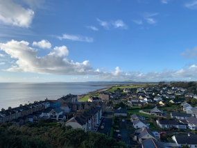
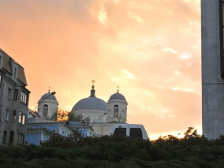
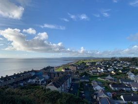
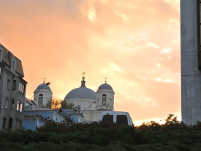
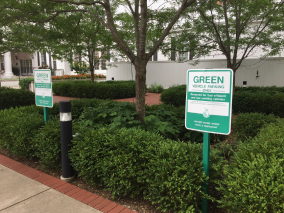
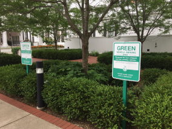

Conoce un poco mejor los lugares de los que proceden tus colegas en
línea
Todo ser humano es un artista, un ser de la libertad, llamado a
participar en la transformación y reforma de las condiciones, el
pensamiento y las estructuras que conforman e influyen en nuestras
vidas.
La ciudad de TripleTen ha reunido a profesionales de diferentes
rincones del mundo. Hoy, la Galería de Arte TripleTen se enorgullece
de presentar historias y fotografías de algunas de las personas que
dedican su tiempo y esfuerzo a hacer que los futuros profesionales de
la tecnología de esta ciudad se sientan como en casa. Cada uno de
nosotros tiene una historia única sobre el lugar del que procede. No
dudes en añadir a nuestra colección tu propia historia y una obra de
arte visual dedicada a tu ciudad natal. No importa de dónde seas, nos
alegra que seas nuestro vecino.
 




 
